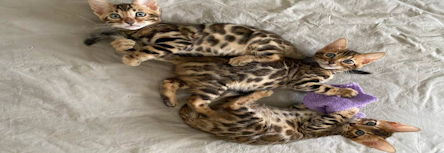

What are Bengal cats?

The Bangle cat may not look like the normal domestic cat
however it it is one of the more popular breeds for cat lovers.
These cats look like they came out of the wild jungle which
gives them a unique edge compared to the other cat breeds.
Even though these cats are really great to have as pets they
take a lot of work to care for them which can be hard for people
who are not used to having a cat. Owning this breed takes a lot
of experience and dedication so best to be prepared when getting one.
About the bengal breed
Physical Aspects
Bangle cats are slender cats usually weighing around 8-18 pounds
depending on the gender. They are 14 to 18 inches making them
one of the bigger cat breeds even if they are far from the
largest. Bangle has a short-length tabby coat with an exotic
look to it with its red-brown spotted or swirled patterns.
Their coat also have an extremely soft and silky touch to it
making it very nice to pet it when it lets you.
Personality
Bangle cats are very intelligent and playful cat that
like the attention they get from their owners.
These cats are always active and energetic anywhere
you go and will always be curious about things that
interest them. Bangle are very affectionate to their
owners making them easy to play mate but be warned you
may need to take a lot of time to play with them.
Lastly, they are more adventurous when it comes to
new things even more than other cats, for example
some like walking on a leash or some like playing with
or in water. Whatever fills their activity needs
the Bangle cat will most likely do.
Health and Grooming
Thanks to the bangle's shorter coat, these cats are
very easy to groom. Just brush their hair once in a while
and a bath won't hurt them since they might like it.
These cats are expected to live up to 12 to 16 years but
with the popular care, they may surpass this for a couple of years.
An important health factor to keep in check is their oral
hygiene since it easy for this cat to get gum disease.
This cat may also get hip dysplasia or hypertrophic cardiomyopathy
in the kneecaps which may require surgery to fix it.
History
This breed of cat was created due to a mix breeding of a domestic cat
and an Asian leopard in the 1960s. The owner only did this because the
leopard she bought was lonely so she got her a male cat partner to be with,
which led these two cats to breed and make a generation of new type of breed.
The first couple of generations show more wild accepts to them but as more
generations of breeding went through they started to act like the breed we know today.